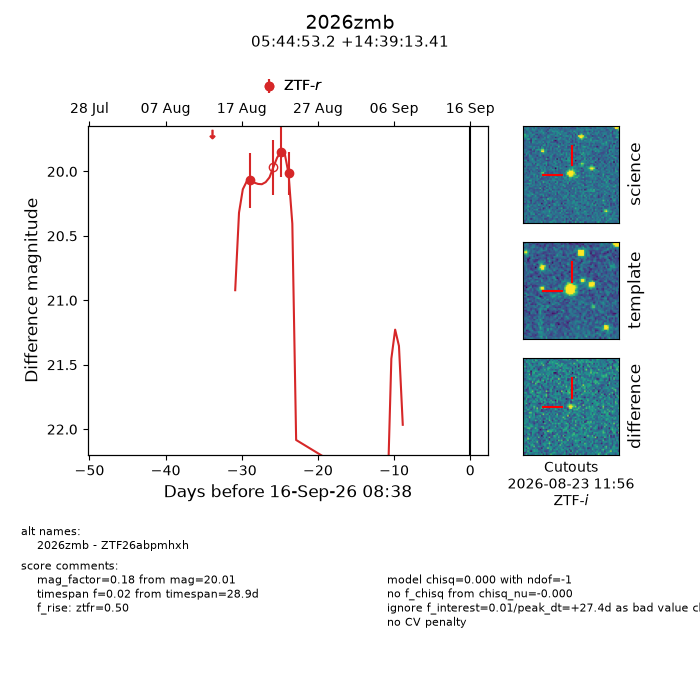
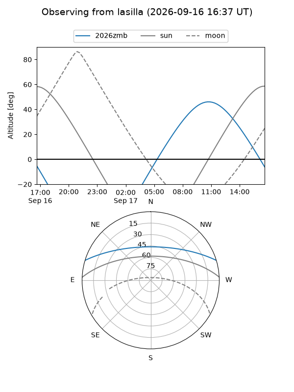
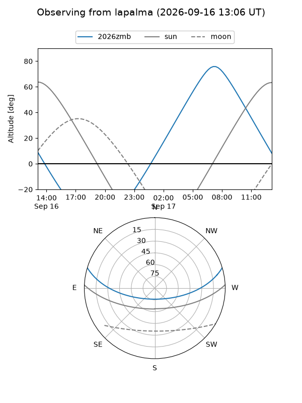
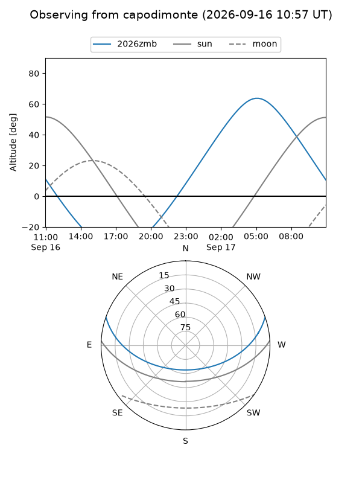
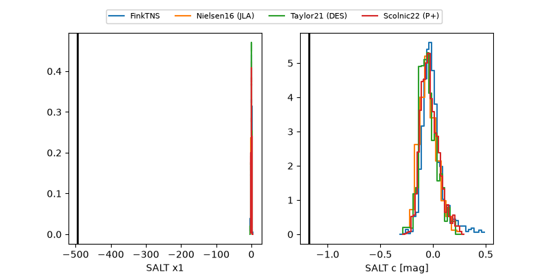

2026zmb
Target 2026zmb at 2026-09-16 15:50
Aliases and brokers:
FINK-ZTF: ztf.fink-portal.org/ZTF26abpmhxh
Lasair-ZTF: lasair-ztf.lsst.ac.uk/objects/ZTF26abpmhxh
ALeRCE-ZTF: alerce.online/object/ZTF26abpmhxh
YSE-PZ: ziggy.ucolick.org/yse/transient_detail/2026zmb
TNS name: wis-tns.org/object/2026zmb
Direct TNS query: direct search
alt names
ZTF26abpmhxh (ztf,fink_ztf)
2026zmb (tns,yse)
Coordinates:
equatorial (ra, dec) = 86.2216,+14.65372
equatorial (HMS+DMS) = 05:44:53.19,+14:39:13.41
galactic (l, b) = (192.1678,-7.53782)
Flags:
TNS type: nan
peak dt: +27.7
Photometry:
last ztfr=20.01
3 ztfr detections
Lightcurve

Visibility



Additional plots
